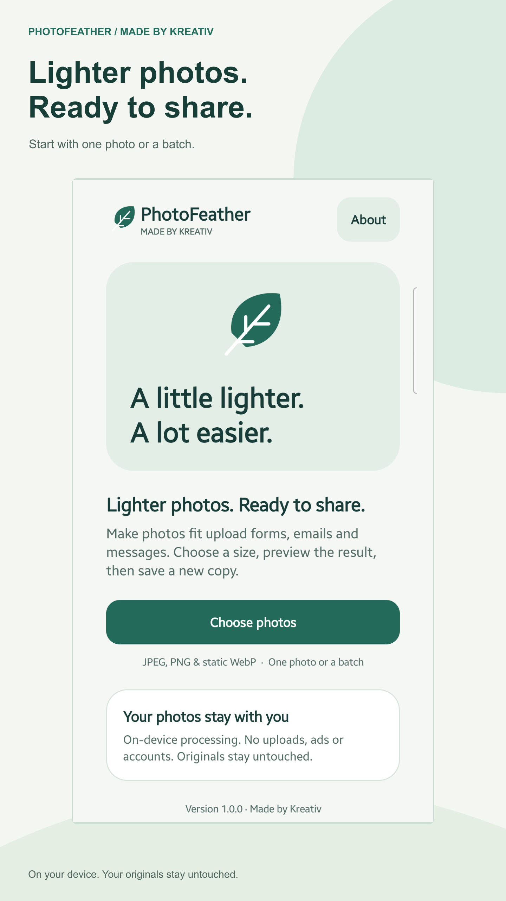
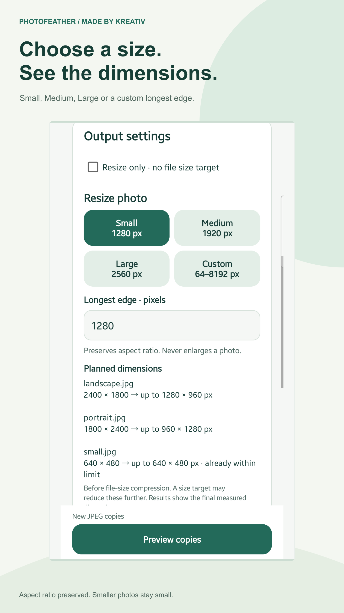
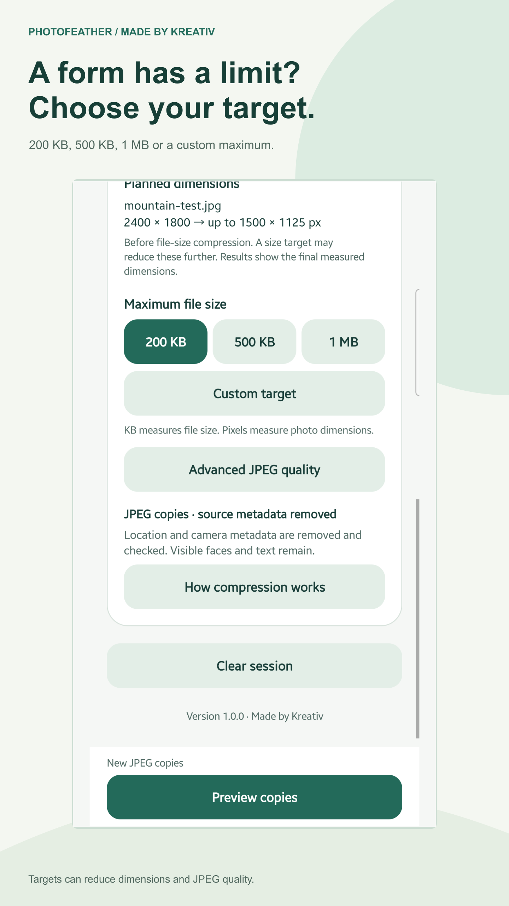
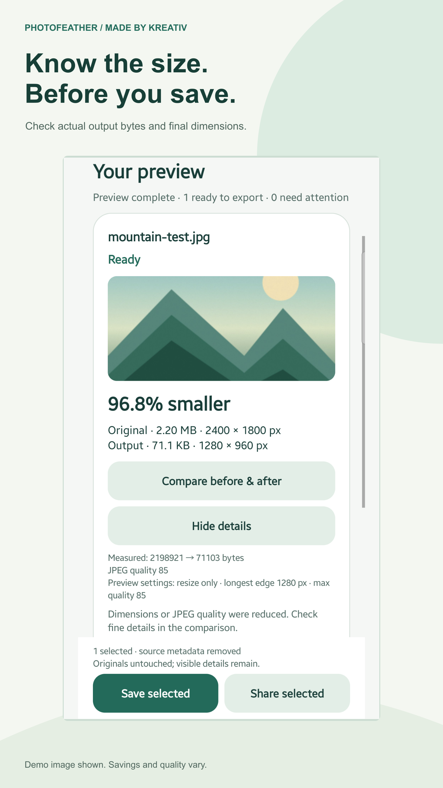
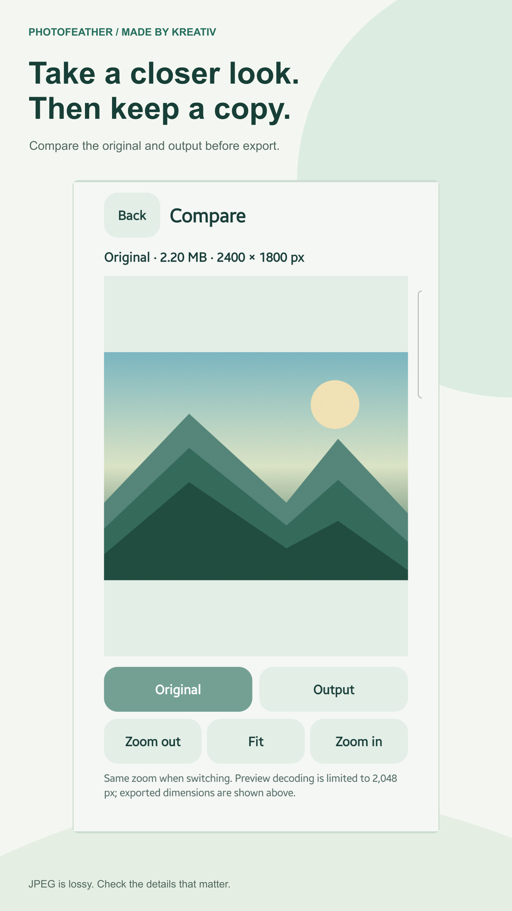
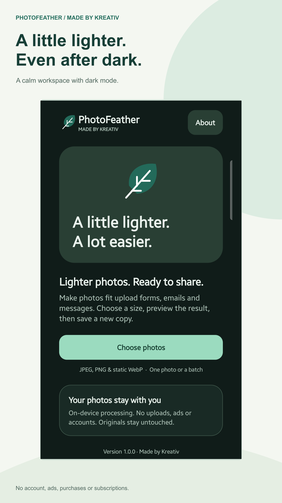

Prepared, not submitted. Free edition · no ads · no purchases. Production signing and Samsung seller approval remain release gates. Binaries labelled UNSIGNED must not be uploaded as signed APKs.
Submission handoff · All listing fields · Reviewer instructions · Asset validation
Six genuine screenshot-based graphics · no AI marks

01-select-photos.png
02-resize-presets.png
03-custom-resize.png
04-measured-results.png
05-compare-photos.png
06-dark-mode.pngFull description
Lighter photos. Ready to share.
PhotoFeather by Made by Kreativ helps you make photos smaller for upload forms, email and messaging. Select your photos, choose a file-size target or resize setting, preview the measured results, then save new copies or share them.
CHOOSE A FILE-SIZE TARGET
Try 200 KB, 500 KB, 1 MB or a custom maximum. PhotoFeather adjusts JPEG quality and, when needed, resolution within its processing limits. Results show the actual encoded file size. If a target cannot be met, the app explains it and does not offer that unsuccessful result for export.
RESIZE WITH CLEAR DIMENSIONS
Choose Small (1280 px), Medium (1920 px), Large (2560 px) or a custom longest edge from 64 to 8192 pixels. Aspect ratio is preserved and smaller photos are never enlarged. Planned width and height appear before processing; results show the final dimensions. Use resize-only mode when you do not need a file-size target.
CHECK BEFORE YOU SAVE
Compare original and output sizes, dimensions and percentage saved. Zoom and pan in the before-and-after view. Optional advanced JPEG quality controls let you set a quality limit. Large photos may be reduced to fit the app's memory limit, and a file-size target may reduce dimensions further.
WORK WITH ONE PHOTO OR A BATCH
Select multiple photos, follow progress, cancel processing and review per-photo results. Retry failed items or export selected successful copies. Unsupported or unreadable files are identified individually. Larger or same-sized results require your explicit choice before export.
KEEP YOUR ORIGINALS
PhotoFeather saves new JPEG copies and never overwrites or deletes originals. Share copies through Android's share sheet. Transparent PNG and WebP images need an opaque background for JPEG output; choose the background before converting.
ON-DEVICE PROCESSING
No accounts, photo uploads, advertising SDKs, analytics SDKs or subscriptions. PhotoFeather has no internet permission. Android's system picker may retrieve photos from a cloud provider you choose; the provider handles that retrieval.
METADATA REMOVED FROM COPIES
Source metadata, including embedded location metadata, is removed from newly encoded JPEG copies and checked before export. This does not anonymise photos or remove faces, text or sensitive details visible in the image.
SUPPORTED FORMATS AND LIMITS
Inputs: JPEG, PNG and static WebP. Output: lossy JPEG. HEIC/HEIF, AVIF, GIF and animated images are not supported. JPEG compression can reduce visible quality; lossless compression and guaranteed visual quality are not promised. File-size units are decimal: 1 KB = 1000 bytes and 1 MB = 1000000 bytes.
Supports dark mode, large text and labelled accessibility controls. All features described here are included in version 1.0.0, with no purchases.
STEP-BY-STEP GUIDE
https://madebykreativ.com/news/compress-photos-android-photofeather/
Support: info@madebykreativ.com
Privacy: https://madebykreativ.com/privacy/photofeather/
Support and privacy
App website · Privacy policy · info@madebykreativ.com